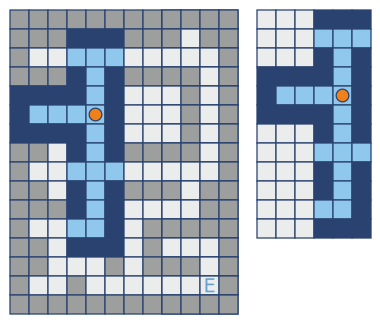

Do you remember the classic mission Open Labyrinth? Well, you once again find yourself inside a labyrinth, but the lights are out and you cannot see the full map. You have flashlight and know that all passages in the Labyrinth are directed along South-North and East-West lines. You don’t yet know your position or the location of the exit. You must hurry as you cannot run forever.
This is a “multicall” mission and as such, your function will be called until you have solved the maze or run out of moves. For each iteration you see a part of the labyrinth in four directions (function input). You can see passages and where they have crossings and turns. If it’s in your range of vision, you’ll see the exit too. The visible zones are represented as a grid as a tuple of strings, where “X” is a wall, ”.” is a passage cell, ”?” is unknown, “P” is player and “E” is the exit. Grids are represented as 2D rectangular arrays. The size is related to size of the visible zone.
For each iteration your function should return one or several actions as a string with directions. Actions are described as directions: “N” - North, “S” - South, “W” - West and “E” - East. For example: the string “NWS” describes a sequence of three moves. The walls are coated in a weird slime so you shouldn’t make a move that would have you walk into a wall. To make things interesting, you are limited to 250 moves (not iterations). You can use global variables between iterations.
For example on the image you can see the full labyrinth and that will be visible for player. And your function will receive:
("???XXX",
"???...",
"???X.X",
"XXXX.X",
"X...PX",
"XXXX.X",
"???X.X",
"???...",
"???X.X",
"???X.X",
"???..X",
"???XXX")
Input: A visible part as a tuple of strings.
Output: An action or several actions as a string.
Precondition:
The labyrinth are surrounded by walls.All passages are narrow (1 cell width)3 < len(visible) ≤ 15all(len(row) == len(visible[0]) for row in visible)
Solution:
history_g, to_search_g = [], []
visited_g, open_area_g = {(0,0)}, {(0,0)}
def draw(pathlist, start):
DIRS = {'E':(0,1), 'W':(0,-1), 'S':(1,0), 'N':(-1,0)}
nodes = [start]
for path in pathlist:
for d in path:
nodes.append((nodes[-1][0]+DIRS[d][0], nodes[-1][1]+DIRS[d][1]))
return nodes
def get_direction(p1, p2, ptrdict):
DIRS = [[0,'E','W'],['S'],['N']]
node, path = p2, ''
while node != p1:
path = DIRS[node[0]-ptrdict[node][0]][node[1]-ptrdict[node][1]] + path
node = ptrdict[node]
return path
def get_neighbor((i,j), llim=None, wlim=None):
plist = [(i-1,j), (i+1,j), (i,j-1), (i,j+1)]
if not llim and not wlim:
return plist
return [(i,j) for i,j in plist if 0<=i<llim and 0<=j<wlim]
def line(p1, p2):
global open_area_g
visited, to_search = {}, {p1: None}
while to_search:
temp = {}
for p in to_search:
visited[p] = to_search[p]
neighbor = [q for q in get_neighbor(p) if q in open_area_g]
for q in neighbor:
if q not in visited: temp[q] = p
to_search = temp
return get_direction(p1, p2, visited)
def move(p1, p2, region):
llim, wlim = len(region), len(region[0])
visited, to_search = {}, {p1: None}
while to_search:
temp = {}
for p in to_search:
visited[p] = to_search[p]
neighbor = get_neighbor(p, llim, wlim)
for q in [(i,j) for i,j in neighbor if region[i][j] in '.PE']:
if q not in visited: temp[q] = p
to_search = temp
return get_direction(p1, p2, visited)
def find_path(region):
global history_g, open_area_g, visited_g, to_search_g
to_search_g = [p for p in to_search_g if p not in visited_g]
llim, wlim = len(region), len(region[0])
P, E, edgelist = None, None, []
for i in range(llim):
for j in range(wlim):
if region[i][j] == 'P':
P = (i,j)
if region[i][j] == 'E':
E = (i,j)
if region[i][j] == '.':
nb = get_neighbor((i,j), llim, wlim)
nb = [region[p[0]][p[1]] for p in nb]
if nb.count('.')==1 and nb.count('X')<3 and len(nb)-nb.count('?')<4:
edgelist.append((i,j))
if E: return move(P, E, region)
current = draw(history_g, (0,0))[-1]
pathlist = sorted([move(P, e, region) for e in edgelist], key=len)[::-1]
edgelist = [draw([path], P)[-1] for path in pathlist]
complist = [draw([path], current)[-1] for path in pathlist]
pathlist = [pathlist[i] for i,c in enumerate(complist) if c not in visited_g]
edgelist = [edgelist[i] for i,c in enumerate(complist) if c not in visited_g]
complist = [c for c in complist if c not in visited_g]
if pathlist:
history_g.append(pathlist[0])
visited_g = visited_g | set(draw(pathlist[:1], current))
for path in pathlist:
open_area_g = open_area_g | set(draw([path], current))
to_search_g += complist[1:]
return pathlist[0]
else:
path = line(current, to_search_g.pop())
history_g.append(path)
visited_g = visited_g | set(draw([path], current))
return path